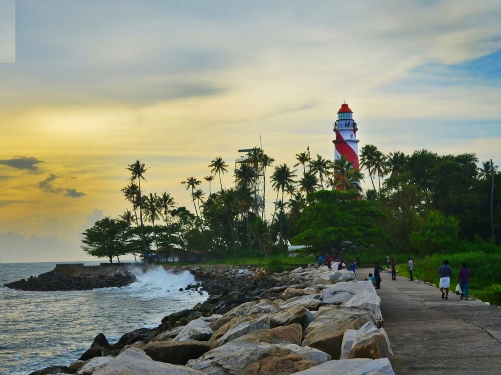
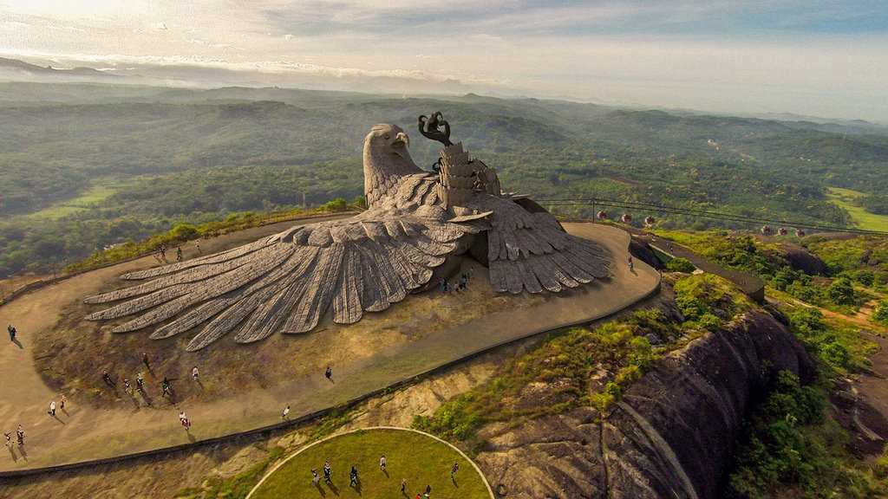

Thangasseri Beach
Thangasseri Beach is located around 6 km away from Kollam in the tiny twee village of Thangassery. The major highlight of the 3 kms long beach is the magnificent lighthouse situated on the shores which attracts a lot of tourist influx.
Ashtamudi Lake
The second largest lake in Kerala, Ashtamudi Lake is situated in the Kollam district. The lake runs over a length of 16 kilometres and covers almost 30% of the town of Kollam. Its name, Ashtamudi has been derived from two words 'Ashta' meaning eight and 'Mudi' meaning branch, thereby stating the fact that lake has eight branches. All the eight branches converge into a single channel that meets with the Arabian Sea. The lake is fed by the major river, Kallada. Coconut trees and palms surround the entire vicinity of the lake adding to its beauty.

Thenmala Tourism
Snuggled between the dense woods of Western Ghats, Thenmala is a UNESCO World Heritage Site situated in Kollam, Kerala. With winding roads, dotted with rubber and tea plantations, Thenmala boasts of being the first planned ecotourism spot in India. Spread over acres of dense timber trees, the name 'Thenmala' translates to Honey Hill suggesting the supply of high-quality honey from the region. This honey has medicinal properties because of the surrounding floral varieties and is exported in large amounts.
Jatayu Earth's Centre
Jatayu Nature Park is a rock-themed park which got opened on November 25, 2017. Built to promote mythology and adventure tourism, the tourism centre boasts of 6D theatre, a digital audio-visual room, cable car and ayurvedic cave resort. It is also home to umpteen adventure activities including paintball, laser tag, archery, bouldering, rock climbing, air-rifle shooting etc. The primary attraction of the park, however, is the world's largest stone-cut bird sculpture replicating Jatayu, the mythical bird from Ramayana.
